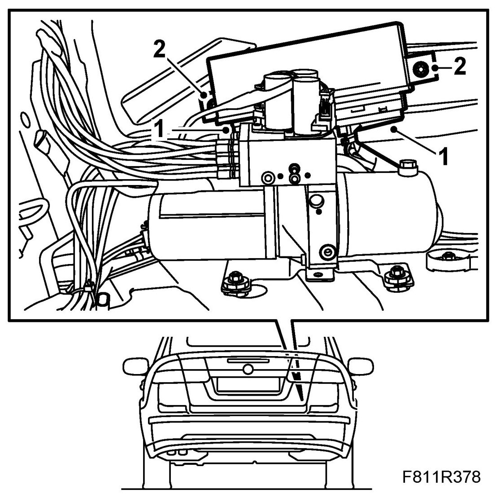

Removal and Replacement
Control Module, STC (565)
To remove
Carry out measures before dismantling the control module.
1. Raise the soft top fully.
2. Remove Luggage compartment side trim, CV on the right hand side.
3. Remove the control module nuts.
IMPORTANT: Take care when releasing the locking mechanism on the connector so as not to damage the connector. Pull the halves straight apart to avoid bending the pins. For further information regarding connectors, refer to Connectors, handling and inspection.
4. Detach the control module connector.
To fit
IMPORTANT: Take care when plugging in the connector so as not to damage or press out the pins/sleeves in the connector. For further information regarding connectors, refer to Connectors, handling and inspection.
1. Connect the control module connector.

2. Fit the control module.
3. Connect the diagnostics tool and erase any diagnostic trouble code.
4. Test the operation of the soft top.
5. Fit Luggage compartment side trim .
Carry out measures after replacing the control module.